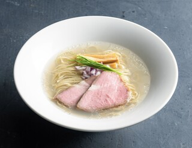

お食事紹介
- ホーム
- お食事紹介

地鶏としじみの中華蕎麦
| 料金 | １２００円＜醤油＞ |
|---|---|
| 味玉 | １４００円＜醤油＞ |
| 特製 | １７００円＜醤油＞ |
スープを一口飲むと、しじみ出汁がガツンと来るような感じではなく、鶏ガラと醤油の風味も感じることができ、ただしっかりとしじみもそこにいるような絶妙なバランスのあるスープでした。これは全部飲みたくなるやつです。 麺は細麺にしましたが、これはこれで非常にスープとも合っていて美味しかったので、次回は手揉みも食べてみたいです。 並ぶのは大変ですが、それに値するような絶品のラーメンでした。
地鶏としじみの特徴
- しじみ漁師としては東京に行ったら一度行ってみたいお店
- しじみの旨みたっぷりのラーメン
- しじみの旨味成分『コハク酸』溢れる一杯

宍道湖しじみ中華蕎麦
| 料金 | １２００円＜塩＞ |
|---|---|
| 味玉 | １４００円＜塩＞ |
| 特製 | １７００円＜塩＞ |
蒲田でとんかつを食べた後に歩いて、、、 行列に飛び込む。 初めては塩がいいそうでそれに従い。。。 失礼ながら、、、 ららぽーと福岡とは全然違う。 騙されていた。 不安が吹き飛ぶ美味さ。 しじみがやりすぎて無い渋すぎないちょうどいい、しっかりとしたスープに。 こりゃ並ぶ。 そしてチャーシューもいやらしい感じで美味い。 意外とマッチング。 薄いわけでもなく、ちょうどいい塩梅。 気づいたらスープ完飲。 ずるい。 しじみを好きになる一杯。
宍道湖しじみの特徴
- ”漁獲量日本一”を誇る大和しじみから、さらに厳選された新たな山陰のブランド
- 大切な時間だからこそ本物を食べてほしい
- 肉厚に生育する宍道湖産ヤマトシジミ